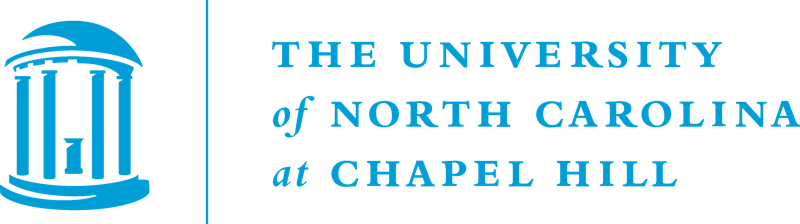
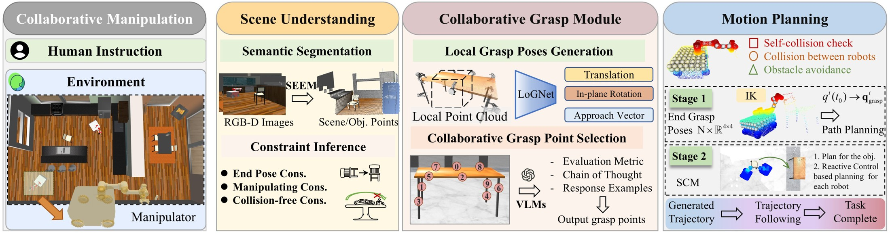

CollaBotVision-Language Guided Simultaneous
Collaborative Manipulation of Large Objects
IEEE Robotics and Automation Letters · 2027
1 The University of Hong Kong
2 Shanghai Jiao Tong University

3 UNC Chapel Hill
Overview
Factory and domestic environments often require moving objects that are too large for a single robot. CollaBot addresses simultaneous collaborative manipulation: multiple robots grasp and move the same object while maintaining their relative end-effector poses.
Given a language-specified manipulation subtask, CollaBot combines scene understanding, collaborative grasp generation, and motion planning. SEEM extracts the target object; LoGNet proposes local grasps; a vision-language model selects a collaborative grasp configuration and infers motion constraints. A two-stage planner then brings the robots to their grasps and coordinates the shared object motion.
(Diffusion Policy)
In the same simulation evaluation with varying initial robot configurations, CollaBot succeeds in 231 of 300 trials; the Diffusion Policy imitation learning baseline completes none.
Method

Understand the scene
Identify the target object, extract its point cloud, and infer task-relevant motion constraints from language and visual observations.
Choose collaborative grasps
LoGNet generates local grasp candidates. VLM guidance selects complementary contacts for the robot team.
Plan the shared motion
First reach the assigned grasps; then move the object while respecting collision and closed-chain constraints.
Simulation
The same framework supports two- and three-robot teams for large-object manipulation.
Results
CollaBot completes 231 of 300 simulated trials across table, chair, and box tasks, including transport, alignment, and flipping. Each task is evaluated over 50 trials.
| Method | Successful trials | Success rate |
|---|---|---|
| GN-POAS-MP | 88 / 300 | 29.3% |
| LN-POAS-MP | 182 / 300 | 60.7% |
| CollaBot | 231 / 300 | 77.0% |
GN / LN: GraspNet / LoGNet local grasp generation. POAS: partial-observation analytic selector. MP: motion planning. The evaluated Diffusion Policy baseline completed 0 of 300 trials.
Success requires a final object position error below 5 cm and a roll–pitch–yaw error norm below 5°. Physical evaluation uses two robots to move a chair near a table, with 2 successful trials out of 3. These experiments evaluate the tested rigid-object subtasks in static environments with known initial robot poses.
Citation
Accepted to IEEE Robotics and Automation Letters on November 27, 2026. The arXiv preprint is available online.
@article{song2027collabot,
title = {CollaBot: Vision-Language Guided Simultaneous Collaborative Manipulation of Large Objects},
author = {Song, Kun and Chen, Gaoming and Ma, Shentao and Jin, Ninglong and Zhao, Guangbao and Ding, Mingyu and Xiong, Zhenhua and Pan, Jia},
journal = {IEEE Robotics and Automation Letters},
year = {2027},
note = {Accepted for publication},
eprint = {2508.03526},
archivePrefix = {arXiv},
url = {https://arxiv.org/abs/2508.03526}
}